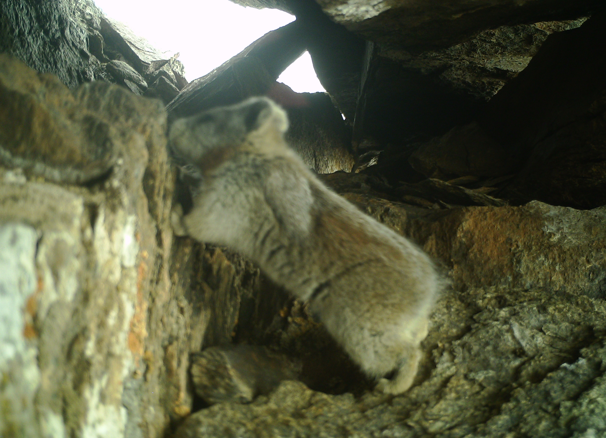
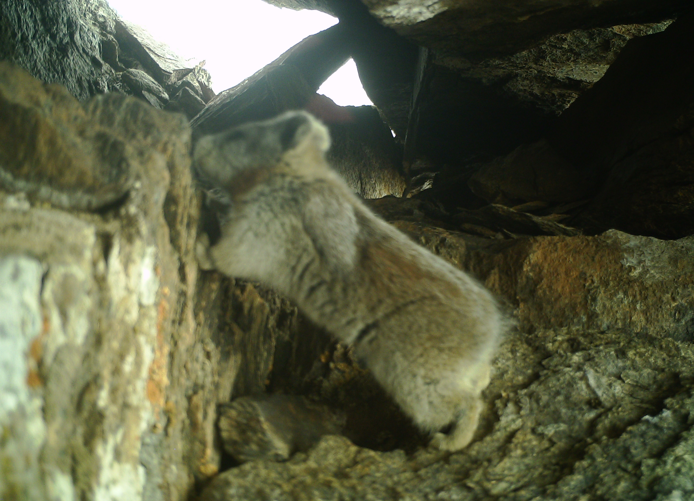

关于我们
地鼠保护协会（Groundhog Conservation Association）是一个致力于保护地鼠及其栖息地的非营利组织。该协会成立于1990年，总部位于美国宾夕法尼亚州的拉丁斯维尔。目前，该协会拥有数百名会员和支持者，遍布全球。地鼠保护协会成立于1990年，旨在保护地鼠和它们的栖息地。我们的组织主张维护地鼠的栖息地，向公众宣传地鼠知识，并致力于确保这个物种成为生态系统中不可或缺的一部分。
地鼠保护协会的主要任务是推动地鼠的保护和研究，为地鼠争取更多的栖息地，提高公众对地鼠的认识和尊重。协会并不仅仅关注美洲土拨鼠（也称地鼠），也会关注其他种类的地鼠。
地鼠保护协会主要的工作包括：为地鼠争取保护区，推广地鼠生态旅游，教育公众对地鼠和它们的栖息地的保护和认识，并通过研究来增进我们对地鼠的了解。协会的成员和支持者也会积极投身到各种活动中去，如志愿者活动和募款活动等。
地鼠保护协会的愿景是让地鼠成为一个得到尊重和保护的物种，并促进人类与地鼠和谐相处。 协会致力于推广地鼠的重要性，以及它们在生态系统中所扮演的关键角色。
协会的主要任务包括制定保护地鼠的政策和行动计划、开展调查研究、提供对生态保护的公众教育以及与政府机构和其他环保组织合作等。协会还与研究机构和大型企业合作，致力于开展新的保护项目和探索可持续的生态解决方案。
地鼠保护协会的愿景是建立一个地球上所有地鼠都能够生存和繁殖的世界。我们希望通过努力实现这个愿景，将生态保护和可持续发展推上一个新的高度
地鼠保护协会是一家致力于保护和维护地鼠这种珍贵生物的非营利性组织。我们的成立旨在提高公众对地鼠的认识和重视程度，进一步推动社会对地球生态系统和生物多样性的关注。
地鼠是一种重要的土壤转化水平调节者，其在农业生产、生态建设等方面都起着举足轻重的作用。然而，由于人类活动的不断扩张以及环境污染的影响，地鼠的栖息地遭到了破坏和损失，数量也逐渐减少。这种情况对于我们的生态平衡以及生态安全都造成了威胁。
为了保护地鼠这种珍贵生物，我们成立了地鼠保护协会。协会旨在通过开展教育宣传、科研论证、政策推动等多种形式，加大对地鼠的保护和维护力度。我们还将积极与各界人士和机构合作，共同营造一个关爱地球生态的良好氛围。
地鼠保护协会希望得到更多人的关注和支持，只有我们共同保护好这种珍贵生物，才能够让我们的地球家园更加美好、健康。
服务项目
- 地鼠栖息地保护计划
- 地鼠宣传教育和外联
- 地鼠的研究和数据收集